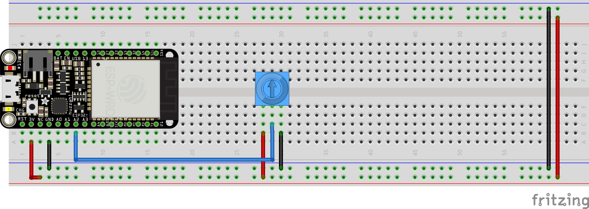
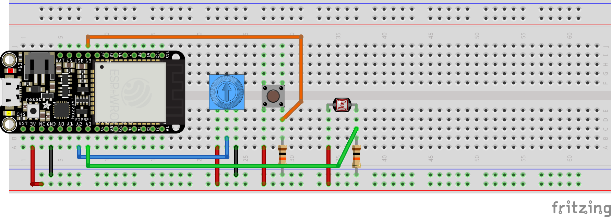

Since our misrocontroller connects to a computer via a USB cable - USB stands for Universal Serial Bus - we can send and receive data via a USB cable using ESP32 microcontroller. In this example we'll use HUZZAH32 board from Adafruit. You can program those boards using different methods and languages, but we'll focus on using ArduinoIDE, as per Adafruit instructions. Before you begin you need to make sure your Arduino IDE is setup for use with the HUZZAH32 boards, for more details and step-by-step instrucitons visit HUZZAH32 page on the Adafruit learning portal. You can use this guide for other boards as well with small deviations for board-specific operations.
We will start by connecting a potentiometer to your ESP32. We'll use a breadboard with a plugged-in HUZZAH32 and connect a potentiometer to pin A2.
We will need initialize the serial connection in the setup() function with a specific baud rate - the rate of data transmission. It's not very important what that rate is as long as we are sending and recieving data on the same rate. Then we'll read the analog value coming from the A2 pin and send it off to the serial port on our computer via USB. We'll be using println() function because it will add a new line character after each printed statement, resulting in each print being on a separate line. We'll also a delay of 100 milliseconds to limit the number of prints to 10 times per seconds and avoid being overwhelemed by the flurry of information.
void setup() {
Serial.begin(9600);
}
void loop() {
Serial.println(analogRead(A2));
delay(100);
}
Once you verify and upload this code to your ESP32 you should be able to open the Serail Monitor. Make sure the baud rate of your Serial Monitor matches the rate you specified in your code (9600 in our example) and you should be able to see the numbers change from 0 to 4095 as you move your potentiometer back and forth.
We can send multipe values from our microcontroller concurrently, provided we have a consistent encoding schema for them. So far we've sent one numerical value and use an end-of-line (aka new line) character ⮑ to identify the end of transmission - which would also allow us to separate one value from the next. This time we'll read from 3 sensors - a potentiometer, a button and a photoresistor - and send those 3 values at once. We'll use the following encoding: The position of the value will tell us which sensor it is from. The value in the first position will be from the potentiometer, the second - from the button, and the third - from the photoresistor. We'll separate those values with a predetermined character. It's not important which character that is, but a , is a convention, so we'll use that. Finally, we'll use end-of-line character to specify the end of transmission and the characters that come after it will count as the next reading of the three sensors.
The breadboard will be configured as follows:
In our code we'll use print() functions to add values to a single transmission, but at the end of it we'll use println() to add the end-of-line character and signify the end of the current transmission and the beginning of the new one.
#define POTENTIOMETER A2
#define BUTTON 13
#define PHOTORESISTOR A3
void setup() {
Serial.begin(9600);
}
void loop() {
Serial.print(analogRead(POTENTIOMETER));
Serial.print(',');
Serial.print(digitalRead(BUTTON));
Serial.print(',');
Serial.println(analogRead(PHOTORESISTOR));
delay(100);
}
This way we have 3 values trasnferred separated by a ','. We encode which sensor the value came from in the position of the value in the transmission, and encode the end of transmission with the character ⮑. If you open the Serial Monitor you should be able to see the corresponsing transmissions.
Just like we were able to receive the data from the serial port using the Serial Monitor built into ArduinoIDE we can receive it with other application that have the capability. One important thing to remember is that only one application can be connected to a given serial port at a time. This means that if you are viewing the data with the Serial Monitor you won't be able to recieve it in, for example, Processing. You will need to close one connection to enable another.
Processing is a popular creative coding platform. It includes a Serial communication library and is capable of receiving serial data.To enable this functionality in your Processing sketch first you need to verify that the library is installed. This is typically true by default but if you see it missing you can install it via Processing library manager.

To use the library we need to add it to our sketch. You can do that by clicking on the name of the library in the dropdown window - this will add the following line to the beginning of your sketch:
import processing.serial.*;
You can also add this line to your sketch manually.
We will use serialEvent